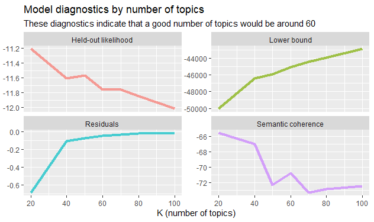

Keyword Subset STM
Following the first structured topic model (STM) and my assessment of it (we can trust it, yay!), I wanted to zoom in on how mental health language is interacting with this space. To do that, I made a subset of the original 995 posts by using the keywords “stress,” “relax,” “anxi,” and “mental health.” Having completed the first topic model, my goal was to see if posts that explicitly used mental health language were also following the same patterns as the larger sample.
The method for this second topic model follows the same protocol as the first topic model, including by re-utilizing the code modeled and provided by Card (2023), Cook (2023), and Silge (2018). The change and challenge for this model came at the beginning as part of creating the subset to work with.
So, to the code!
Creating the Subset
After reading in the previously cleaned CSV that contained the 995 posts to a fresh project (with a copy of the original code), I investigated a way to select only texts that contained keywords. This was a bit of a struggle, and I only found the right function by talking with Maddi’s sister Kate who also uses R, but from a more statistics-focused vantage. She recommended using “grepl” first, but that only identified the numbers of posts that contained the keywords. “Grep” turned out to be the correct function–retrieving both the number of posts and the text of the posts themselves–and resulted in the code below.
```{r}
# how to select cells that contain certain words
stress <- grep(pattern = "stress|anxi|relax|mental health", threads_clean$text, value = TRUE)
```The result made a value in the R environment that contained 89 posts, or 8.94% of the original sample. While the number of posts alone doesn’t suggest significant discussion of mental health (and I hadn’t expected it to, given the Subreddit’s main goal is to discuss cozy games), the fact that mental health terms are present in this many posts is worth examination.
With the value in hand, I tokenized it, removed stopwords, and converted it into a DFM. From there, I was able to move through the code already posted with the explanation of the first topic model to the point of tuning the number of topics.
Tuning the Model
Like the first topic model, I generated several visualizations to help tune the topic model, including top words:
Many of the top words here are similar if not repeated from the same visualization in the first topic model, which was the first major clue that these posts were not outliers in the original sample. Rather, this made me suspect that they likely contained both words common to game suggestion posts and mental health language.
To check this suspicion, I continued through the diagnostic code provided by Silge (2018).

Because of the lower number of posts represented in this topic model, the diagnostic above pretty clearly shows that anything above 40 topics (as evidenced by the residuals and semantic coherence) was going to be iffy. Thinking about it just in terms of sheer number, too, a higher number of topics for a sample of 89 would result in a more severe instance of the phenomena that I observed in the first topic model–the model having so many buckets to put things into that it ends up counting each post as its own topic, thus defeating the purpose of the computational method.
To test this thought, I ran different K values.
K = 60
Welp, that’s not good. They are indeed being weighted the same owing to the number of topics relative to the number of available posts. Because of that, this visualization doesn’t draw attention toward larger trends in the sample, which is the actual goal.
Altering the Topic Model K Range
Up to this point, I’d been using the K values that Julia Silge (2018) put forward in her tutorial, but since her tutorial (and my initial STM) dealt with a larger sample, it’s clear that those numbers won’t work for me. So, I substituted the K values that I thought were more likely to be successful. Based on what I was seeing already, I made an educated guess that the meaningful K value was going to be somewhere between 20 and 30, so I also added in K = 25 to see what would happen.
```{r}
many_models <- data_frame(K = c(10, 20, 25, 30, 40, 50)) %>%
mutate(topic_model = future_map(K, ~stm(stress_tokens_nostop_dfm, K = .,
verbose = FALSE,
seed = TRUE)))
```K = 25
And here’s what happened:
Much better. The plot itself is showing more recognizable patterns and the topics are easier to parse. The expanded view of the top words in each topic revealed mental health language being paired with aesthetic words, like witchy, along with game titles. This indicated that mental health language was occuring in spaces where the main business of the Subreddit (game suggestions) was still dominant.
Topic 16 Top Words:
Highest Prob: really, game, like, games, played, play, looking, just, one, m
FREX: witchy, really, watching, awesome, absolutely, anyone, character, style, right, learning
Lift: witchy, -spiritfarer, -wytchwood, apreciated, audience, awhile, becoming, breath, btw, burn
Score: apreciated, witchy, watching, really, literally, shame, struggle, watched, tears, awesome
K = 30
I spent some time waffling between K = 25 and K = 30 because both were similarly sharp. In the end, K = 30 drew out mental health language, including terms like shame and struggle, that I didn’t specifically search for. Additionally, it brought them to greater prominence in the topics they appeared in.
Topic 16 Top Words:
Highest Prob: games, really, game, like, played, cozy, looking, play, anyone, m
FREX: question, watching, really, anyone, hi, shame, struggle, tears, watched, storyline
Lift: shame, struggle, tears, watched, -spiritfarer, -wytchwood, apreciated, audience, awhile, becoming
Score: apreciated, watching, really, question, shame, struggle, watched, tears, differently, youtubers
Coincidentally, the Topic 16 from K = 30 and the one from K = 25 above have a lot of the same terminology (referring to some common posts, certainly), but in K = 30 the “feeling” words shame and struggle are popping up in the FREX. This implies that this topic is narrow enough that these words are both exclusive to and meaningful within the topic. (Note: I don’t include “tears” here as a feeling word because it refers to the game title “Tears of the Kingdom,” an entry in the Zelda franchise that has similar aesthetics to the other titles in the topic.)
But what does it MEAN?
The presence of mental health language in tandem with cozy video games and in a heavily moderated space where standalone discussions of mental health are not allowed is very encouraging. Yet, it would be premature to draw further conclusions because the presence of mental health language doesn’t account for context. Some of my search terms are common in everyday conversation, which makes it impossible to make a claim about how people are or are not regarding cozy games as anything beyond games just based on their presence.
So, I should look to the future and next steps.
References
Card, D. (2023). week02 [Github repository]. Github. https://github.com/danieljcard1/demo_docs/tree/main/demos/week02
Card, D. (2023). week07 [Github repository]. Github. https://github.com/danieljcard1/demo_docs/tree/main/demos/week07
Cook, J. (2023). Extracting reddit data with R and the package RedditExtractoR (2023 update) [Video]. YouTube, https://www.youtube.com/watch?v=Snm0Azfi_hc
Silge, J. (2018). Training, evaluating, and interpreting topic models. Julia Silge. https://juliasilge.com/blog/evaluating-stm/